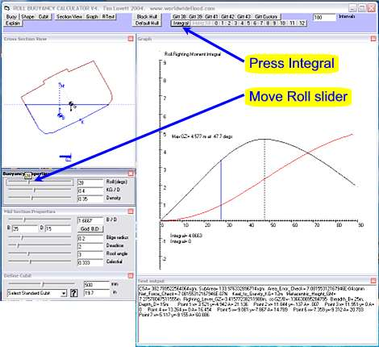
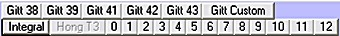
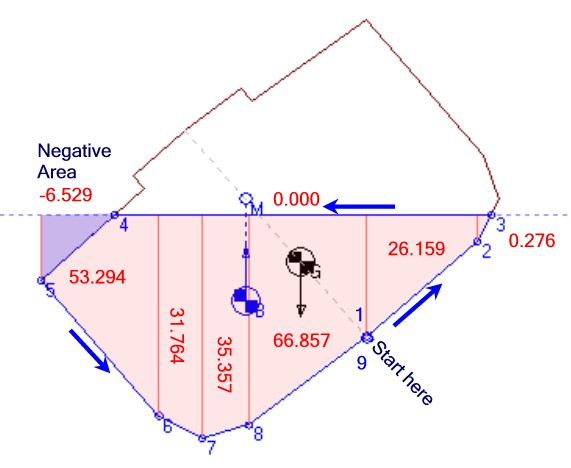
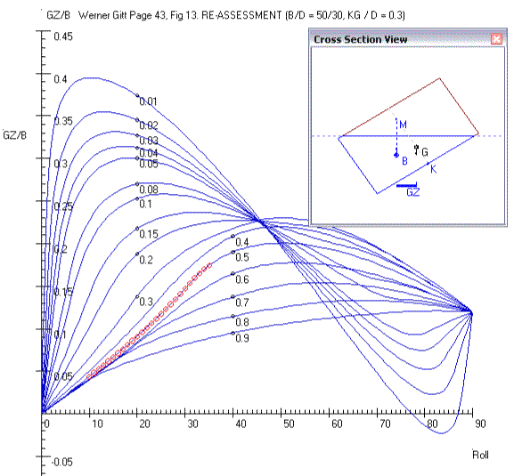
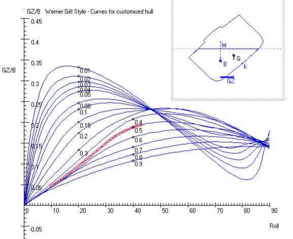

COPYRIGHT Tim Lovett
© June 2004
..
The Program
(Download
here)
The Roll Stability Calculator can be
used to study the stability of various hull cross-sections in static
equilibrium. (Tilting slowly in flat water). This is one of the first things to
be checked in a new design. Static roll stability can also be easily verified by
building a scale model and tilting it over in the water.
Getting Started
The quickest way to see something is
to press Integral, and then move the Roll slider. You are now doing what a naval
architect would do on a new hull design - checking the roll stability. The most
stable vessels will have the highest curves (relatively speaking). The next
thing to is to adjust the other two sliders in the buoyancy panel, KG/B (the
height of the vessel's mass center) and Density. Keep exploring until you begin
to get a feel for these design parameters. If it crashes it simply means I
couldn't be bothered making the program robust on peripheral parameter sets, but
I might get round to it if its really annoying you.

So what are all these buttons?

They are predefined arks.
'Gitt 38'
stands for page 38 of the Werner Gitt booklet (currently in German, see Ref
1). The program is duplicating his results using a different calculation
approach (see How it Works below).
The 'Gitt Custom' button goes to the
next step allowing the user to define their own cross-section and then plot the
same set of buoyancy curves. The numerical approach used in this program does
not limit the analysis to a pure rectangle, as was the case in papers by Morris,
Collins, Hong and Gitt.
The second row of buttons labeled 0
to 12 relate to the Korean study Safety
of Noah's Ark in a Seaway. In this study 12 hull variations were compared to
the Biblical Ark (No 0) and tested by a team of naval architects and structural
engineers from the world class Kriso facility. This program reproduces the first
(and simplest) of the three major parameters - stability, strength and
seakeeping, but can also work with a general hull shape rather than a purely
rectangular transverse cross section.
Note: If you are attempting to
duplicate the Korean data you need to use a high number of intervals (1000-5000)
to improve the accuracy. Safety
of Noah's Ark in a Seaway, Section 6.2, Table 3, column AR (m.rad).
This column represents the amount of energy it takes to tip the ship over to its
top corner. (Well, if you multiply by buoyancy force or weight you get Joules,
and all these 'arks' are the same weight). You should be able to do better than
0.1% of the Korean researcher's 1994 TJ results.
|
How
Smart are You?
The most famous
paper in the world about the safety of Noah's Ark is this
one. A team of ship scientists (naval architects) wrote it. What they
found out was that if you change the ark to a different shape (longer or
fatter or taller etc) it is not as good as the Ark from the Bible. For
example, by making it taller it will be stronger but might start to
capsize. See Ark
Safety Paper for dummies (Not that you are a dummy of course...)
Now, let's see
if you can check those Korean scientists.
Look at Table
3. There are 4 columns.
Column 1 is the
different ark shapes
Column 2 (flim)
is how far you can tilt (roll) each ark before the roof dips into the
water
Column 3 (AR)
is how much work it takes to do this tilt
Column 4 is
boring.
All you have to
do is run the Roll
Stability Program, then press the button for the ark shape from Table
3. Number "0" is the Biblical ark. Now look carefully at the
writing underneath the graph and you should see something like this;
Hong_Limit_GZ_integral_trapezoidal= .804847648645595m.RAD. This is
supposed to be the same as the Column 3 number AR.
Talk about a lot
of decimal places! Bit silly really, it is not this accurate because
the number of intervals is only 100. You
will notice the computer gets slower when you increase the intervals, and
if you put too many it might refuse to do it ! That's because I was
too lazy to make the program properly.
Questions
1. The ark with
the biggest number in Column 3 (Ar) is the most stable design. Which one is
this? Why do you think it is hard to tip over?
2. The Biblical
Ark is number "0". Where did it come in the stability
contest?
3. Why do you
think the Ark "0" is still the best design, despite not having
the highest stability?
Exercise
Assuming you
have a fast enough computer, try 10 000 intervals. You should get pretty
close to the research paper.
Work out
how close you can get for each hull shape (as a percentage of the reading)
Answers
|
The following principles are employed in the Roll Stability
Calculator. (These were all developed by Archimedes before 200BC)
-
Archimedes Principle
(Hydrostatics)
-
Area and center of gravity of
a trapezium
-
Integration by geometric sum
of areas (trapezoidal method)
|
How it
works
The program
represents a slice of the hull. The output is GZ - the horizontal
distance between hull mass centroid G and buoyancy centroid B.
INPUT:
Define the
hull shape, density and gravity center. Apply a roll angle
CALCULATION:
Calculate area
of hull to determine mass (using density)
Calculate
current buoyancy area based on new roll angle
Check vertical
force equilibrium. If unbalanced adjust vertical position and
re-calculate buoyancy force
Find centroid
of submerged area and measure GZ
Repeat for
successive roll angles and sum the values to give the integral curve.
|
Looks
impressive? Not really. Let's take a closer look.
The transverse section is formed by
straight lines (polygonal). Provided the points are in consecutive order around
the polygon, the area can be calculated the same way regardless of the position or
angle of the cross-section. The waterline is at Y=0. The area of the submerged (displaced) water is then calculated by adding
up trapezoids using the simple expression; (In semi math/code form)
For i = 1 To (pt - 1)
subarea = subarea + (Xi - X i + 1) * (Yi
+ 1 + Yi) / 2
Next i
Sweet eh?
Example.
Default hull,
Cubit = 500mm, KG/D=0.4, Relative Density=0.58. Angle or Roll=40 degrees. Output
data includes the following trapezoidal areas;
Point 1 x= 4.821 y=-6.945 A= 26.159
Point 2 x= 11.354 y=-1.063 A= .276
Point 3 x= 11.872 y= 0 A= 0
Point 4 x=-10.654 y= 0 A=-6.529
Point 5 x=-14.396 y=-3.49 A= 53.294
Point 6 x=-7.424 y=-11.798 A= 31.764
Point 7 x=-4.878 y=-13.152 A= 35.357
Point 8 x=-2.106 y=-12.357 A= 66.857
CSA=
382.7895sqm, SubArea= 222.017sqm. Checking this submerged (displaced) area ratio
222 / 383 = 0.58 which gives the correct desired.

Once the displaced area has been
calculated, the hull is shifted up or down until the buoyancy force matches the
gravity force. The adjustments are done using the Newton-Raphson method which
works reliably on these rather gradual curves. (The NR method takes next
estimate as the tangential zero. The idea is not strictly an Archimedes thing,
Newton was somewhat later, however the ancient Greek did touch on some of the
basic concepts of calculus). Very effective, only three or four iterations
will give sufficient accuracy.
accuracy = 0.000000001
While Abs(F) > accuracy
dFdy = (F - lastF) / (Ys - LastYs)
LastYs = Ys
Ys = LastYs - F / dFdy
Call yTransform: Call BuoyancyForce
Wend
The next step in the process is to
determine the centroid (center of area) in a fashion similar to the trapezoidal
area calculation. I found this on the net in some other language. This
is the sweetest bit of code, especially for anyone who has ever had to calculate
centroids by hand (students obviously).
For i = 1 To (pt - 1)
k = (XB(i) * YB(i + 1)) - (XB(i + 1) * YB(i))
Xbc = Xbc + ((XB(i) + XB(i + 1)) * k)
Ybc = Ybc + ((YB(i) + YB(i + 1)) * k)
Next i
Xbc = Xbc / (6 * subarea)
Ybc = Ybc / (6 * subarea)
Finally, the GZ values are integrated
from 0 to 90 degrees using a simple trapeziodal approximation as described
earlier. The result is compared with the Simpson rule (Parabolic segments) for
any number of intervals up to 10000. Interestingly the Simpson rule can be
less accurate on the more linear curves, but it serves as a nice check.
No special geometric cases need to be
considered; the method works for any roll angle and any polygonal shape.
A set of curves can be generated by
repeating the calculation for hulls of different relative density.
Here is an example generated using
the data from Prof Werner Gitt "Das sonderbarste Schiff der Weltgeschichte"
2001.

Since the hull section can be defined
as a polygon, any shape (single loop) can be analyzed. For example, the default
hull includes a 0.2B bilge radius and a 2 degree deadrise (V-keel). The effect
is shown below - very little. Ignoring the absurdly lightweight hulls (less than
0.2), the general shape of the curves and location of maximum are hardly altered
by the bilge radius.

1. Prof Werner Gitt "Das sonderbarste Schiff der Weltgeschichte"
2001. (The most amazing ship in the history of the World).
2. Buoyancy and Stability of Ships
Vol 1 R.F. Scheltema De Heere & A.R. Bakker Harrap London 1970
|
Answers
to Questions
1.
The ark with the biggest number in Column
3 (Ar) is the most stable design. Which one is this?
Ark
number 9 = 0.964 is the most stable.
Why
do you think it is hard to tip over?
Because
it is wide. Ark 4 is the same width but not as tall so it dips into the
water more easily. So Ark 9 is safest in roll. Ark 1 is obviously the
worst because it is so tall and narrow.
2.
The Biblical Ark is number "0". Where did it come in the
stability contest?
Fifth.
The order is 9,10,6,5,0,3,7,11,4,2,8,12,1 where 0 is the Biblical ark.
3.
Why do you think the Ark "0" is still the best design, despite
not having the highest stability?
Good
question! The Hong paper compares 3 parameters - safety (roll),
strength (hull bending) and seakeeping (accelerations). The Biblical ark
is not too bad in any of these.
Want
more info? Hong study
comments
|
 |
Exercise
Assuming you
have a fast enough computer, try 10 000 intervals. You should get pretty
close to the research paper.
Work
out how close you can get for each hull shape (as a percentage of
the reading). Should
be less than 1%. See results here.